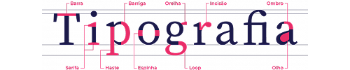
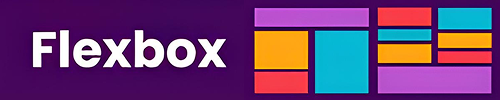
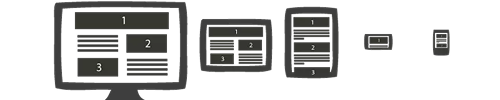
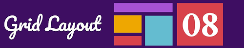
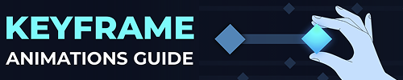

Linha do Tempo
Linkedin
data 05/02

Na aula, criamos uma conta na plataforma e aprendemos sobre sua importância como rede social profissional, destacando seu papel na construção de networking, na divulgação de competências e na busca por oportunidades no mercado de trabalho.
AcessarComponentes do Computador
data 07/02
Na aula, aprendemos sobre todos os componentes do computador, conhecidos como hardware, que correspondem à parte física, ou seja, aquela que podemos tocar. Estudamos peças fundamentais como placa-mãe, processador, memória RAM, armazenamento, placa de vídeo e fontes de alimentação, entendendo suas funções e interações. Além disso, realizamos um desafio prático, no qual montamos uma configuração de computador com um orçamento de R$ 3.000, aplicando na prática os conhecimentos adquiridos.
Sistemas Operacionais
data 12/02

Na aula, exploramos os conceitos básicos de sistemas operacionais e entendemos como eles influenciam o desenvolvimento de software. Conhecemos ambientes de desenvolvimento comuns, como IDEs, e aprendemos sobre os processos de Tecnologia da Informação e Comunicação aplicados em ambientes empresariais e industriais. Também estudamos temas importantes como infraestrutura de TI, redes, software, hardware e a importância das normas e padrões técnicos.
Fundamentos de Linux/Sistemas Operacionais / Hardware
data 19/02
Na aula,Estudamos os conceitos básicos sobre como os sistemas operacionais funcionam, com foco
especial
no Linux, entendendo sua estrutura, características e importância no desenvolvimento de
software. Também aprofundamos nossos conhecimentos sobre hardware, vendo como ele se relaciona
diretamente com o sistema operacional.
Além disso, realizamos na prática a criação de uma máquina virtual, onde instalamos e testamos o
Linux. Essa atividade foi muito importante para aplicar o que aprendemos na teoria e entender
melhor o funcionamento do sistema em um ambiente controlado e seguro.
Metodologias Ágeis
data 21/02

Na aula, Estudamos os principais conceitos das metodologias ágeis, entendendo como elas ajudam a
organizar
e agilizar o desenvolvimento de software. Vimos como essas práticas facilitam o trabalho em
equipe, melhoram a comunicação e tornam o processo de criação de sistemas mais eficiente e
flexível.
Conhecemos métodos como Scrum e Kanban, aprendendo sobre seus papéis, etapas e ferramentas que
auxiliam na gestão de projetos. Foi uma aula muito importante, pois mostrou como aplicar essas
metodologias no dia a dia profissional, contribuindo para o sucesso dos projetos de
desenvolvimento.
Tipografia
data 26/02

Na aula, aprendemos sobre UI (Interface do Usuário) e UX
(Experiência do Usuário), entendendo que UI trata da aparência e dos elementos visuais, enquanto
UX foca na experiência e satisfação do usuário ao usar o sistema.
Estudamos a tipografia, que influencia na legibilidade e estética das interfaces, e as cores,
que ajudam a transmitir emoções e orientar a navegação.
Falamos sobre navegabilidade, que garante que o usuário consiga se mover facilmente pelo
sistema, e o fluxo de informações, que organiza o conteúdo de forma clara e lógica.
Também aprendemos sobre testes de usabilidade, importantes para identificar falhas e melhorar a
experiência antes de lançar o produto.
Por fim, vimos a prototipação, entendendo seus tipos (como protótipos de baixa e alta
fidelidade), exploramos ferramentas online que facilitam esse processo e elaboramos um
organograma para planejar melhor a estrutura do sistema.
Foi uma aula muito completa, que mostrou como cada detalhe impacta na criação de sistemas mais
eficientes e agradáveis para os usuários.
Cores e Gestalt
data 28/02

Na aula, Primeiro, exploramos o uso das cores, entendendo como elas influenciam a percepção,
transmitem emoções e ajudam a comunicar mensagens de forma eficaz nas interfaces. Vimos
conceitos como a psicologia das cores, combinações harmônicas e o impacto das cores na
usabilidade e acessibilidade dos sistemas.
Depois, conhecemos os princípios da Gestalt, que são regras da percepção visual que explicam
como nosso cérebro organiza os elementos para formar um todo coerente. Estudamos conceitos como
proximidade, semelhança, continuidade e fechamento, e como aplicá-los para criar designs mais
intuitivos e agradáveis.
A aula foi fundamental para entender como o uso correto das cores e dos princípios da Gestalt
podem melhorar a experiência do usuário, tornando o sistema mais atraente e fácil de usar.
Prototipagem/Figma
data 07/03 & 12/03
Na aula, Estudamos o conceito de prototipagem, que é uma etapa fundamental no desenvolvimento de
sistemas para criar modelos funcionais das interfaces antes da programação. Isso ajuda a
visualizar e testar ideias, facilitando ajustes rápidos e garantindo uma melhor experiência para
o usuário.
Na prática, utilizamos o Figma, uma ferramenta online muito popular para design e prototipação.
Criamos um protótipo completo, onde pudemos aplicar os conceitos aprendidos, organizando telas,
adicionando interatividade e simulando o fluxo de navegação do usuário.
Foi uma aula bastante prática e importante para entender como transformar ideias em projetos
visuais que ajudam a guiar o desenvolvimento do sistema.
Introdução HTML & CSS
data 08/04

Na aula, Aprendemos o básico dessas duas linguagens fundamentais para a construção de sites. O
HTML foi apresentado como a estrutura da página, responsável por organizar os conteúdos como
textos, imagens e links. Já o CSS serve para estilizar essa estrutura, definindo cores, fontes,
espaçamentos e layout.
Para colocar tudo em prática, criamos nosso primeiro site simples, onde aplicamos os conceitos
básicos para construir uma página funcional e visualmente agradável. Foi uma experiência muito
legal, porque conseguimos ver o resultado imediato do nosso trabalho e entender como HTML e CSS
trabalham juntos para criar páginas na web.
não há responsividade
FLEXBOX
data 23/04

Na aula, Estudamos como o Flexbox facilita a criação de layouts mais organizados e responsivos,
permitindo alinhar, distribuir e posicionar os elementos de uma página de forma mais prática e
eficiente.
Aprendemos as principais propriedades, como display: flex, justify-content, align-items e
flex-direction, além de como usar o Flexbox para adaptar o layout em diferentes tamanhos de
tela.
Também fizemos exercícios práticos, criando estruturas com Flexbox e vendo, na prática, como ele
facilita a organização dos elementos sem precisar usar tantos comandos complexos.
Foi uma aula muito importante, pois o Flexbox é essencial para desenvolver sites modernos e bem
estruturados.
Responsividade
data 25/04

Na aula, Estudamos como a responsividade é fundamental para que as páginas se adaptem bem a
diferentes tamanhos de tela, como computadores, tablets e celulares, garantindo uma boa
experiência para todos os usuários.
Aprendemos a usar técnicas como media queries no CSS, além de boas práticas para criar layouts
flexíveis e que se ajustam automaticamente conforme o dispositivo.
Também realizamos atividades práticas, adaptando páginas para que ficassem responsivas, testando
o resultado em vários tamanhos de tela.
Foi uma aula muito importante, pois a responsividade é essencial no desenvolvimento web atual,
onde a maioria das pessoas acessa sites por dispositivos móveis.
Versionamento/GitHub
data 07/05
Na aula, Estudamos a importância do versionamento no desenvolvimento de software, que permite controlar as alterações feitas no código, trabalhar em equipe de forma organizada e manter um histórico de todas as modificações. Aprendemos a usar o Git, entendendo comandos básicos como git init, git add, git commit e git push, além de como criar e gerenciar repositórios no GitHub, que é uma plataforma online para hospedar e compartilhar projetos. Também fizemos atividades práticas, criando nosso próprio repositório no GitHub e enviando códigos para ele, o que nos ajudou a entender melhor como funciona o fluxo de trabalho com versionamento. Foi uma aula muito importante, pois o uso de ferramentas como Git e GitHub é essencial para quem quer atuar na área de desenvolvimento de sistemas.
AcessarUnidades de Medidas e Layout - GRID
data 09/05

Na aula, Primeiro, estudamos as principais unidades de medida usadas no desenvolvimento web, como
pixels (px), porcentagem (%), em e rem. Entendemos como cada uma delas influencia o tamanho e a
proporção dos elementos na página, principalmente quando falamos de responsividade.
Depois, aprendemos sobre o sistema de layout GRID, que é uma ferramenta poderosa do CSS para
criar estruturas organizadas e flexíveis. Estudamos as principais propriedades, como display:
grid, grid-template-columns e grid-gap, e como elas facilitam a criação de layouts mais
complexos, sem a necessidade de muitos ajustes manuais.
Também fizemos atividades práticas, criando layouts com GRID e testando diferentes configurações
para ver como os elementos se organizam automaticamente conforme o espaço disponível.
Foi uma aula muito produtiva, que nos ajudou a entender como usar as unidades de medida e o GRID
para construir páginas bem estruturadas e responsivas.
Uso do #ID e Inputs
data 16/05
Na aula,Primeiro, entendemos como utilizar o #ID no HTML e CSS, aprendendo que ele serve para
identificar elementos únicos na página, permitindo que sejam estilizados ou manipulados de forma
específica, sem afetar outros componentes.
Depois, estudamos os inputs, que são os campos usados para interagir com os usuários, como
caixas de texto, botões de envio, checkboxes e seletores. Vimos como criar diferentes tipos de
inputs com a tag input e como personalizá-los com o CSS, muitas vezes usando o #ID para deixar
cada campo com uma aparência específica.
Também fizemos atividades práticas, criando formulários simples, aplicando IDs e estilizando os
inputs para melhorar a aparência e a usabilidade.
Foi uma aula muito importante, pois aprendemos como deixar as páginas mais interativas e
organizadas, além de entender como o #ID pode facilitar o desenvolvimento e a manutenção do
código.
Animações com Keyframes
data 21/05

Na aula, Estudamos como usar a regra @keyframes para criar animações que dão mais vida e
movimento aos elementos de uma página web. Vimos como definir os estados inicial e final da
animação, além de configurar o tempo, a direção e o tipo de repetição.
Também aprendemos sobre propriedades importantes como animation-name, animation-duration e
animation-iteration-count, que são essenciais para controlar a animação de forma precisa.
Na parte prática, criamos animações simples, como movimentar caixas, mudar cores e alterar
tamanhos de elementos, tudo isso aplicando os keyframes que desenvolvemos.
Foi uma aula muito interessante, pois vimos como as animações podem melhorar a experiência do
usuário, deixando os sites mais dinâmicos e atraentes.
Ver o Site
Formas com CSS
data 23/05
Na aula, Estudamos como usar propriedades como width, height, border-radius e border para criar
várias formas geométricas, como círculos, quadrados, triângulos e outras figuras.
Além disso, aprendemos a utilizar a propriedade clip-path, que permite criar formas ainda mais
complexas e personalizadas, cortando elementos de acordo com formatos específicos, como
polígonos, elipses ou até formas livres.
Na prática, criamos várias formas usando essas técnicas e testamos como aplicá-las em diferentes
partes do layout, como botões, ícones e áreas de destaque.
Foi uma aula muito criativa e importante, pois mostrou como é possível construir elementos
gráficos diretamente com CSS, sem depender de imagens, deixando os sites mais leves e modernos.
FIM
Isso foi tudo que aprendemos neste primeiro semestre